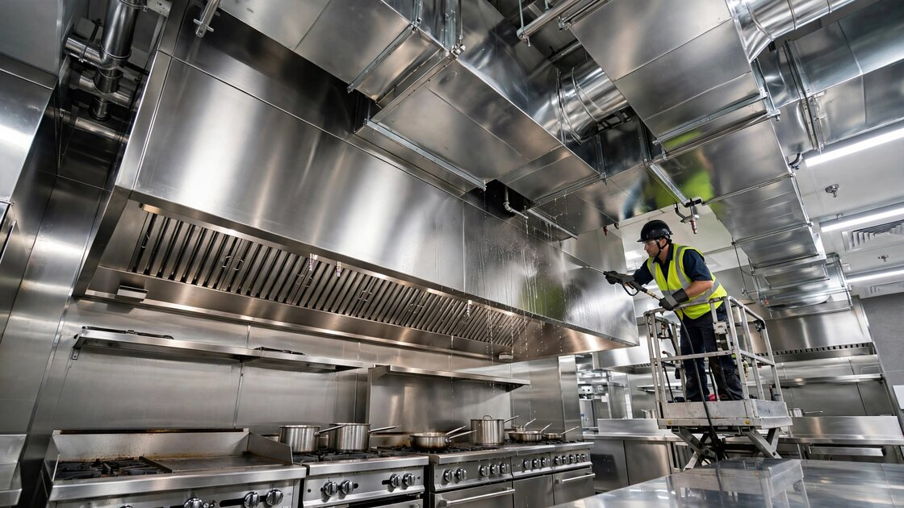

Kitchen Exhaust Cleaning Verification SaaS for Restaurants and Fire Marshals
The Bureau of Labor Statistics counted 731,324 food service and drinking place establishments in the US as of Q4 2025. Cooking equipment is responsible for 64.2% of restaurant fires, according to USFA/FEMA analysis of NFIRS data. NFPA 96 mandates periodic exhaust system cleaning on a schedule ranging from monthly to annually depending on the type of cooking. Yet the verification mechanism connecting the cleaning contractor, the restaurant operator, the fire marshal, and the insurance carrier is, in 2026, a paper sticker slapped on a greasy hood and a certificate filed in a binder nobody opens until something catches fire.

The Problem
Every commercial kitchen that produces grease-laden vapors must have its exhaust system cleaned on a schedule dictated by NFPA 96, the Standard for Ventilation Control and Fire Protection of Commercial Cooking Operations. The standard is not optional. Table 11.4 specifies cleaning frequencies based on cooking type: monthly for solid fuel cooking and 24-hour operations, quarterly for high-volume cooking with charbroilers and wok ranges, semi-annually for moderate-volume operations, and annually for low-volume or seasonal kitchens. The ANSI/IKECA C10-2021 standard goes further, defining the cleaning methodology itself: pre-clean inspection, cleaning to bare metal, and post-cleaning cleanliness verification levels.
Cleaning itself is well-understood. An entire industry exists to do it. Verified Market Reports valued the North American kitchen exhaust cleaning services market at $2.7 billion in 2025, projected to reach $4.2 billion by 2033, growing at 6.2% CAGR. What does not exist is a reliable way to verify that the cleaning actually happened, that it was performed to standard, and that the information flows to the parties who need it.
Four parties have a stake in whether a commercial kitchen exhaust system is clean:
| Stakeholder | What They Need | What They Have Today |
|---|---|---|
| Cleaning Contractor | Proof that the job was done to standard, protecting against liability claims | Paper certificates, IKECA Proof-of-Performance stickers, before/after photos stored on a technician's phone |
| Restaurant Operator | Assurance they're on schedule, documentation for fire marshal inspections and insurance audits | A binder of paper certificates, maybe a recurring calendar reminder |
| Fire Marshal / AHJ | Verification that NFPA 96 compliance is current across their jurisdiction | On-site inspections, checking paper stickers during walkthroughs, no centralized database |
| Insurance Carrier | Risk data on whether the kitchen is maintained before writing or renewing a policy | Asking the restaurant owner to produce certificates during the underwriting process, or nothing at all |
This verification gap is not theoretical. State Farm reported paying nearly $234 million in cooking fire losses from January 2024 through November 2025, with the average cooking fire loss exceeding $73,000. When a grease fire races through an uncleaned duct system and destroys a restaurant, the first question the insurance adjuster asks is whether the exhaust cleaning was current. The answer depends on whether someone can find a paper certificate in the debris.
The Gap in the Market
Software exists for scheduling cleaning appointments (generic field service tools) and for fire protection inspection broadly (Inspect Point, BuildingReports, ServiceTrade). But no platform has been purpose-built for the specific four-party verification loop that kitchen exhaust cleaning requires. The existing options break down along predictable lines:
| Solution | What It Does | What's Missing |
|---|---|---|
| IKECA Proof-of-Performance Program | Trade association provides adhesive decals and certificate templates. Cleaning contractors post a decal on the hood after each service, include a certificate with before/after conditions. | Paper-based. No digital verification. A fire marshal cannot look up whether a restaurant is current without visiting. An insurer cannot query compliance status at underwriting time. Decals can be placed without the work being performed. |
| Inspect Point | Fire inspection software with NFPA forms for sprinklers, alarms, extinguishers, and fire doors. Built-in deficiency management and AHJ report submission. Pricing from Silver to Platinum tiers. | Designed for fire protection contractors inspecting fire suppression systems, not kitchen exhaust cleaning contractors. No NFPA 96 cleaning verification workflow. No cleaning-to-bare-metal documentation protocol. No restaurant operator portal or insurance data feed. |
| ServiceTrade | Field service management for commercial contractors (10-200 technicians). Strong with fire protection and mechanical contractors. Customer portal, scheduling, CRM. | General-purpose FSM tool. No NFPA 96-specific workflows, no cleaning verification protocol, no AHJ compliance portal, no insurance integration. Designed for companies with 10+ technicians; most KEC contractors run 1-5 crews. |
| Generic Field Service (Jobber, Housecall Pro) | Scheduling, invoicing, customer management for small service businesses. | No fire safety compliance features whatsoever. A cleaning contractor can schedule the job and send an invoice, but cannot generate a compliance record that a fire marshal or insurer would accept. |
This gap is structural. Kitchen exhaust cleaning sits at the intersection of fire protection, food safety, and insurance underwriting, but it doesn't belong neatly to any of those categories. Fire protection software focuses on sprinklers and alarms. Food safety software focuses on temperature logs and health code inspections. Insurance platforms focus on property data, not maintenance records. Kitchen exhaust cleaning compliance falls through every crack.
The Solution
A vertical SaaS platform that digitizes the NFPA 96 cleaning verification loop across all four stakeholders:
1. Contractor Mobile App (the core product, free tier available): A mobile application for kitchen exhaust cleaning technicians that replaces paper certificates with a digital verification workflow. Before cleaning: GPS-stamped arrival time, technician credential verification (IKECA CECS/CECT number validated against the IKECA directory), pre-cleaning photo documentation of each system component (hood, plenum, duct access panels, fan). During cleaning: component-by-component checklist aligned to ANSI/IKECA C10-2021. After cleaning: post-cleaning photos of bare metal surfaces, grease depth gauge measurements at documented points, digital signature from the restaurant manager, and automatic generation of a compliance record with a unique verification code. The entire record is timestamped, geolocated, and immutable.
2. Restaurant Operator Dashboard ($29/location/month): A web portal where restaurant owners and managers see their cleaning compliance status at a glance. Upcoming cleaning due dates based on NFPA 96 Table 11.4 frequency requirements. Historical cleaning records with full photo documentation. Automatic reminders when a cleaning is approaching or overdue. A compliance certificate that can be shown to fire marshals during walkthroughs or to insurance auditors during policy renewals, linked to the underlying verification record. For multi-location operators (franchisees running 5-50 locations), a rollup dashboard showing compliance status across all sites.
3. AHJ Portal (free for fire marshals): A web interface where fire marshals and Authorities Having Jurisdiction can look up cleaning compliance status for any commercial kitchen in their jurisdiction. Search by restaurant name, address, or permit number. View the most recent cleaning record, including photos and technician credentials, without visiting the site. Receive automatic alerts when a high-risk establishment (solid fuel cooking, 24-hour operation) becomes overdue. Export compliance data for the jurisdiction in standard formats for integration with existing fire prevention databases. This portal is offered free to fire departments because their participation creates the compliance pull that drives contractor and restaurant adoption.
4. Insurance Data API ($0.50 per verification query): A programmatic interface that commercial property insurers can call during underwriting to verify whether a restaurant's kitchen exhaust cleaning is current. Returns a structured response: compliant/non-compliant/unknown, last cleaning date, next scheduled cleaning, and the name and credentials of the contractor who performed the last service. Insurers who integrate this data into their underwriting workflows can differentiate pricing between compliant and non-compliant restaurants, creating a financial incentive for restaurant operators to stay current. The API monetizes the compliance data that the platform generates without exposing individual cleaning records.
The Math: What a Missed Cleaning Actually Costs
Take a moderate-volume restaurant in a strip mall. Annual revenue: $1.2 million. Required cleaning frequency under NFPA 96: quarterly. Average cost per cleaning: $400-800 for a standard hood system with 15-25 feet of ductwork.
Scenario A: Cleaning is performed quarterly, on schedule. Annual cleaning cost: $2,400 (4 × $600 average). Insurance premium: standard commercial kitchen rate. Fire marshal inspection: routine pass. Total annual compliance cost: $2,400 plus the insurance premium, which already assumes compliance.
Scenario B: Cleaning is skipped for two quarters. The restaurant saves $1,200 in cleaning fees. But: grease accumulates in the ductwork. A flare-up on the charbroiler sends flame into the hood. The grease in the duct ignites. The fire suppression system activates (if maintained), but the fire has already spread beyond the hood. Damage: $73,000 average per cooking fire (State Farm, 2025). The insurance adjuster requests proof of exhaust cleaning compliance. The restaurant cannot produce current certificates. The insurer invokes the maintenance clause and reduces or denies the claim. The restaurant owner is personally liable for the shortfall.
Scenario C: Same restaurant uses the verification platform. The platform sends reminders at 75% and 90% of the cleaning interval. The cleaning contractor has the platform on their phone and submits verified cleaning records. When the fire marshal visits, the operator pulls up the dashboard on a tablet: four green checkmarks, last cleaned six weeks ago, next cleaning scheduled in five weeks. The fire marshal moves on. When the insurance policy renews, the underwriter queries the API: four verified cleanings in the past 12 months, IKECA-certified contractor, all records include photo documentation. The underwriter applies a 5-10% premium credit for verified compliance. At a $4,000 annual commercial kitchen fire policy, that's $200-400 back. The platform subscription ($29/month = $348/year) roughly pays for itself through the insurance credit alone, before counting the avoided liability of a denied claim.
Revenue Model
| Revenue Stream | Amount | Notes |
|---|---|---|
| Contractor app (free tier) | $0 | Free for up to 20 cleaning records/month. Gets contractors into the ecosystem. Their records create the compliance data that drives restaurant and insurer adoption. |
| Contractor app (Pro tier) | $79/month per company | Unlimited records, branded reports, scheduling, customer portal access, automated reminders for customer follow-up. Target: contractors with 3+ technicians. |
| Restaurant operator dashboard | $29/location/month | Compliance tracking, certificate generation, fire marshal readiness, multi-location rollup. Billed monthly or annually ($299/year). |
| Insurance verification API | $0.50/query | Per-query pricing for underwriting verification. Alternative: annual subscription for unlimited queries at $5,000-25,000/year based on policy volume. |
| AHJ portal | Free | Fire marshal access is free. Their participation creates the compliance demand that drives paid adoption. Municipal budget cycles make charging impractical. |
| Compliance analytics (Phase 2) | $199/month | Jurisdiction-level compliance heat maps, trending data on delinquent establishments, risk scoring by neighborhood. Target: commercial insurance brokers and fire prevention bureaus. |
Unit economics on a mid-market territory (metro area with 5,000 restaurants): If 15% of restaurants subscribe (750 locations × $29/month × 12 = $261,000 ARR) and 40 cleaning contractors use the platform (20 on free, 20 on Pro at $79/month × 12 = $18,960 ARR), the territory generates $280K ARR before insurance API revenue. Insurance queries at 2 queries/restaurant/year (new policy + renewal) across the 750 subscribing restaurants: 1,500 × $0.50 = $750/year. Insurance API revenue scales with platform penetration, but the near-term business is contractor Pro subscriptions and restaurant dashboards.
Market Size
TAM: The Bureau of Labor Statistics counted 731,324 private food service and drinking place establishments in Q4 2025 under NAICS 722. Not all of these have commercial cooking exhaust systems requiring NFPA 96 compliance (coffee shops with no cooking, bars without kitchens). Conservatively estimating that 65% operate Type I grease-producing cooking equipment: 475,000 establishments. At $29/location/month ($348/year): $165M/year in restaurant subscription revenue. Adding contractor Pro subscriptions (estimated 3,000 KEC contractors nationally, 60% converting to Pro at $79/month = $1.7M) and insurance API revenue ($5-10M at scale): TAM approximately $175M/year in recurring software revenue.
SAM: Focus on the top 30 metropolitan statistical areas, which contain approximately 55% of US food service establishments. That's 260,000 potential restaurant subscribers. At 20% penetration: 52,000 × $348/year = $18M/year. Plus ~1,200 contractors in these metros at 50% Pro conversion: $570K. SAM: approximately $19M/year.
SOM (Year 3): Launch in 3 metros (e.g., Houston, Phoenix, Atlanta: high restaurant density, active fire marshal enforcement, NFPA 96 adoption). 2,500 restaurant locations × $348/year = $870K. 80 contractor Pro accounts × $948/year = $76K. Year 3 target: approximately $950K ARR.
Why Now
Fire marshals are going digital, and they expect their vendors to follow. The City of Charleston already maintains a qualified vendor list for kitchen exhaust cleaning contractors. Massachusetts requires state licensing for all commercial hood cleaning and inspection personnel, with a specific application process through the Department of Fire Services. NYC requires FDNY Certificate of Fitness credentials and FDNY-approved companies for every cleaning. As more jurisdictions move toward digital record-keeping, the demand for a platform that AHJs can query will accelerate.
Insurance carriers are pricing maintenance into underwriting. State Farm's $234 million in cooking fire payouts over 22 months demonstrates that kitchen fires are a material line item for commercial property insurers. As carriers adopt more granular risk models, the ability to verify maintenance compliance at the point of underwriting becomes a competitive advantage. The first insurer to offer verified-compliance discounts creates a flywheel: restaurants adopt the platform to get the discount, which generates data that makes the discount actuarially supportable.
Ghost kitchens and cloud kitchens have created a compliance gray zone. The ghost kitchen market has exploded since 2020, with facilities operating multiple virtual brands from a single commercial kitchen. These kitchens often run at higher volume and longer hours than traditional restaurants, pushing them into more frequent cleaning schedules under NFPA 96. But ghost kitchens frequently operate in industrial spaces where fire marshal inspection is less routine than in traditional retail restaurant strips. A digital compliance platform provides visibility into facilities that fire departments may not even know exist.
Private equity is rolling up cleaning contractors, and they need operational infrastructure. The same PE consolidation pattern visible in fire protection (where service-focused acquirers are building national footprints for recurring ITM revenue) is beginning in kitchen exhaust cleaning. A platform roll-up acquirer can use this SaaS to standardize operations across acquired contractors, enforce consistent cleaning protocols, and demonstrate compliance metrics to restaurant chain customers during enterprise sales. The SaaS becomes the operational backbone that makes consolidation viable.
Startup Costs
| Category | Cost | Notes |
|---|---|---|
| Mobile app (iOS + Android, 6 months) | $180K | 2 mobile developers. GPS-stamped photo capture, offline mode for kitchens with poor signal, IKECA credential validation, digital signature capture, cleaning checklist engine. |
| Web platform (dashboards + AHJ portal, 6 months) | $140K | 1 backend + 1 frontend developer. Restaurant dashboard, AHJ search portal, insurance API, multi-location management. |
| NFPA 96 / IKECA content library | $15K | Licensing NFPA 96 text for in-app reference, building cleaning frequency calculator, component checklists by system type. Legal review of compliance language. |
| Pilot program (3 metros, 6 months) | $50K | Free subscriptions for first 200 restaurants and 30 contractors. On-site onboarding with cleaning crews. Fire marshal outreach in pilot cities. |
| Insurance carrier BD | $30K | Travel, presentations, and pilot integrations with 2-3 regional commercial property insurers to validate the API pricing model and compliance discount concept. |
| IKECA/PWNA partnership development | $10K | Trade show presence (IKECA annual conference, PWNA Washing Equipment Trade Association). Co-marketing with trade associations whose members are the primary users. |
| Operating buffer (12 months) | $50K | Cloud hosting, support, legal, accounting. |
| Total | $475K |
Limitations
The 475,000-establishment estimate of kitchens requiring NFPA 96 compliance is derived by applying a 65% ratio to the BLS total of 731,324 food service establishments. BLS does not publish a breakdown by cooking equipment type. The actual number of establishments with Type I grease-producing hoods could be higher (if most bars have at least a small kitchen) or lower (if many coffee shops and ice cream parlors are counted in NAICS 722 but have no cooking equipment). A more rigorous estimate would require cross-referencing health department permit data, which varies by jurisdiction and is not centrally aggregated.
No major commercial property insurer currently offers a specific discount for digitally verified kitchen exhaust cleaning. The insurance premium credit model (5-10% for verified compliance) is hypothetical. The concept is actuarially plausible, since verified maintenance should reduce fire frequency, but adoption requires insurers to build new underwriting logic and file updated rate schedules with state insurance commissioners. This is a multi-year process, not a launch-day feature.
The AHJ adoption assumption (fire marshals using a free portal to look up compliance) depends on fire departments having internet access and willingness to use third-party software. Some jurisdictions have procurement policies that prohibit reliance on vendor-provided data without formal agreements. Others may view a private company's compliance database as insufficiently authoritative. The platform augments, but cannot replace, on-site fire inspections.
Cleaning contractor adoption requires overcoming the friction of documenting work that has traditionally been undocumented. A technician who finishes a hood cleaning at 2 AM does not want to spend 15 minutes taking photographs and filling out digital forms. The app must reduce documentation time to under 5 minutes per cleaning to achieve adoption. If it adds too much overhead, contractors will revert to paper stickers.
Strongest Counterargument
Inspect Point could add NFPA 96 kitchen exhaust cleaning workflows to their existing platform in a quarter. They already have the mobile inspection infrastructure, the AHJ reporting integrations (The Compliance Engine, IROL, LivSafe), the deficiency management pipeline, and 1,300+ fire protection contractor customers. Kitchen exhaust cleaning is an adjacent vertical, not a different industry. Inspect Point's CEO could assign two engineers to build NFPA 96 checklists, add bare-metal photo verification, create a restaurant operator portal, and launch it as a new "trade" within the existing product. Their existing fire sprinkler trade page already demonstrates the pattern: trade-specific workflows running on a shared platform infrastructure. They would reach kitchen exhaust cleaning contractors through the same fire protection trade shows and NFSA/IKECA conferences. Their brand credibility with fire marshals is already established.
The counterpoint: Inspect Point's customers are fire protection contractors who inspect sprinkler systems, fire alarms, and fire extinguishers. Kitchen exhaust cleaning contractors are a different trade with different credentials (IKECA vs. NICET), different pricing structures (per-cleaning vs. annual service contracts), different work patterns (middle-of-the-night cleanings vs. daytime inspections), and different customer relationships (restaurant operators vs. building owners). The overlap is smaller than it appears. More importantly, Inspect Point is iOS-only for its mobile app, which limits adoption among small KEC contractors, many of whom run Android devices. And Inspect Point has never built a consumer-facing portal (their customer portal serves the contractor's clients, not end consumers), which is what the restaurant operator dashboard would be. Their architecture is contractor-centric, not multi-stakeholder. Building the four-party verification loop requires rethinking the product from the restaurant operator inward, not from the contractor outward. That's a different product with a different go-to-market, even if the inspection mechanics look similar.
What You Can Do
If you own or manage a restaurant: Pull out your last kitchen exhaust cleaning certificate right now. Check the date. If it's past the interval specified by NFPA 96 Table 11.4 for your cooking type, you're non-compliant. Call your cleaning contractor today and schedule a service. While you're at it, verify their credentials: are they IKECA-certified? Do they carry general liability and workers' compensation insurance? Ask for before-and-after photographs with your next cleaning. Store them digitally, not in a paper binder. When your fire marshal visits, having timestamped photos of bare metal surfaces is worth more than a paper certificate.
If you run a kitchen exhaust cleaning company: Start photographing every cleaning now, even without software. Before photos of grease buildup, after photos of bare metal, at every access panel and component. Store them in a cloud folder organized by customer and date. This documentation protects you against liability claims ("they didn't really clean it") and positions you as a premium contractor who charges 15-20% more because your work is verifiable. If you're not IKECA-certified, get certified: the PWNA KEC Compliance program costs $249 for company compliance and $59 per employee. Certification differentiates you from the unlicensed crews who undercut on price and leave grease in the ducts.
If you're a fire marshal or AHJ: Consider whether your jurisdiction has any mechanism to verify kitchen exhaust cleaning compliance between walkthroughs. If your only verification is reading a paper sticker during an annual inspection, you're relying on an unauditable system. Charleston, SC maintains a qualified vendor list and requires contractors to complete a qualification process with the Fire Marshal Division. Massachusetts licenses individual technicians and requires company registration. If your jurisdiction does neither, every restaurant in your territory could be using an unqualified cleaning company and you'd have no way to know.
The Bottom Line
Cooking equipment causes 64% of restaurant fires. NFPA 96 mandates cleaning to prevent them. An entire $2.7 billion industry exists to perform the cleaning. But the verification layer connecting the cleaner to the restaurant to the fire marshal to the insurer is still made of paper stickers and filing cabinets. The unit economics work at every node: contractors who document their work can charge premium rates, restaurants that prove compliance get insurance credits and faster fire inspections, fire marshals who can query compliance remotely reduce their inspection burden, and insurers who price maintenance into underwriting reduce their loss ratios. Someone needs to close the loop digitally. The cleaning industry has the technicians, the restaurants have the mandate, the fire departments have the authority, and the insurers have the money. What's missing is the software that makes the four-party handshake happen without anybody picking up a phone or reading a sticker on a greasy hood.